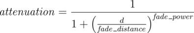
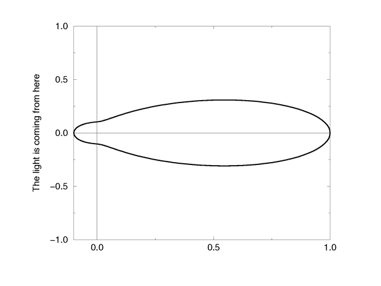
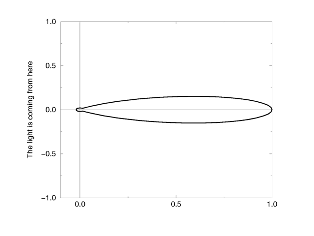
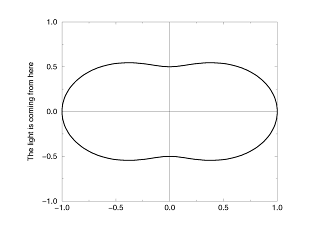
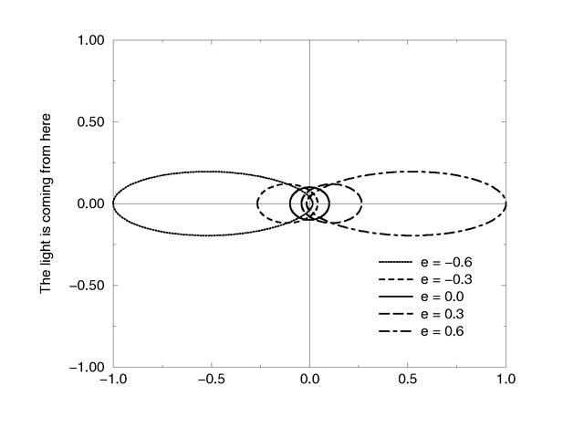
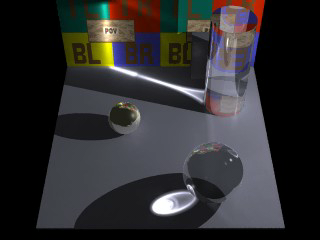
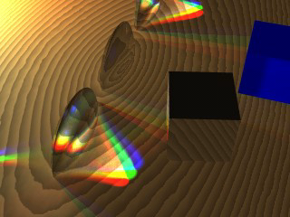
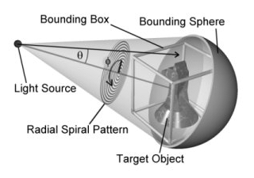

| POV-Ray for Unix version 3.7 | ||||
|
|
||||
| Home | POV-Ray for Unix | POV-Ray Tutorial | POV-Ray Reference | |
Introduced in POV-Ray 3.1 is an object modifier statement called
interior. The syntax is:
INTERIOR:
interior { [INTERIOR_IDENTIFIER] [INTERIOR_ITEMS...] }
INTERIOR_ITEM:
ior Value | caustics Value | dispersion Value |
dispersion_samples Samples | fade_distance Distance |
fade_power Power | fade_color <Color>
MEDIA...
Interior default values:
ior : 1.0 caustics : 0.0 dispersion : 1.0 dispersion_samples : 7 fade_distance : 0.0 fade_power : 0.0 fade_color : <0,0,0>
The interior contains items which describe the properties of the interior of the object. This is in contrast to the texture and interior_texture which describe the surface properties only. The interior of an object is only of interest if it has a transparent texture which allows you to see inside the object. It also applies only to solid objects which have a well-defined inside/outside distinction.
Note: The open keyword, or clipped_by modifier also allows you to see inside but interior features may not render properly. They should be avoided if accurate interiors are required.
Interior identifiers may be declared to make scene files more readable and to parameterize scenes so that changing a single declaration changes many values. An identifier is declared as follows.
INTERIOR_DECLARATION: #declare IDENTIFIER = INTERIOR | #local IDENTIFIER = INTERIOR
Where IDENTIFIER is the name of the identifier up to 40 characters long and INTERIOR is any valid interior
statement. See #declare vs. #local for information on identifier scope.
In previous versions of POV-Ray, most of the items in the interior statement were previously part of the finish statement. Also the halo statement which was once part of the texture statement has been discontinued and has been replaced by the media statement which is part of interior.
You are probably asking WHY? As explained earlier, the interior contains items which describe the properties of the interior of the object. This is in contrast to the texture which describes the surface properties only. However this is not just a philosophical change. There were serious inconsistencies in the old model.
The main problem arises when a texture_map or other patterned texture is used. These features allow you to create
textures that are a blend of two textures and which vary the entire texture from one point to another. It does its blending by fully evaluating the apparent color as though only one texture was applied and then fully
reevaluating it with the other texture. The two final results are blended.
It is totally illogical to have a ray enter an object with one index or refraction and then recalculate with another index. The result is not an average of the two ior values. Similarly it makes no sense to have a ray enter at one ior and exit at a different ior without transitioning between them along the way. POV-Ray only calculates refraction as the ray enters or leaves. It cannot incrementally compute a changing ior through the interior of an object. Real world objects such as optical fibers or no-line bifocal eyeglasses can have variable iors but POV-Ray cannot simulate them.
Similarly the halo calculations were not performed as the
syntax implied. Using a halo in such multi-textured objects did
not vary the halo through the interior of the object. Rather,
it computed two separate halos through the whole object and averaged the
results. The new design for media which replaces
halo makes it possible to have media that varies throughout the
interior of the object according to a pattern but it does so independently of
the surface texture. Because there are other changes in the design of this
feature which make it significantly different, it was not only moved to the
interior but the name was changed.
During our development, someone asked if we will create patterned interiors
or a hypothetical interior_map feature. We will not. That would
defeat the whole purpose of moving these features in the first place. They
cannot be patterned and have logical or self-consistent results.
It is very important that you know the basic concept behind empty and solid objects in POV-Ray to fully understand how features like interior and translucency are used. Objects in POV-Ray can either be solid, empty or filled with (small) particles.
A solid object is made from the material specified by its pigment and finish statements (and to some degree its normal statement). By default all objects are assumed to be solid. If you assign a stone texture to a sphere you will get a ball made completely of stone. It is like you had cut this ball from a block of stone. A glass ball is a massive sphere made of glass. You should be aware that solid objects are conceptual things. If you clip away parts of the sphere you will clearly see that the interior is empty and it just has a very thin surface.
This is not contrary to the concept of a solid object used in POV-Ray. It is
assumed that all space inside the sphere is covered by the sphere's
interior. Light passing through the object is affected by
attenuation and refraction properties. However there is no room for any other
particles like those used by fog or interior media.
Empty objects are created by adding the hollow keyword (see
Hollow) to the object statement. An empty (or hollow) object is
assumed to be made of a very thin surface which is of the material specified
by the pigment, finish and normal statements. The object's interior is
empty, it normally contains air molecules.
An empty object can be filled with particles by adding fog or atmospheric media to the scene or by adding an interior media to the object. It is very important to understand that in order to fill an object with any kind of particles it first has to be made hollow.
There is a pitfall in the empty/solid object implementation that you have to be aware of.
In order to be able to put solid objects inside a media or fog, a test has to be made for every ray that passes through the media. If this ray travels through a solid object the media will not be calculated. This is what anyone will expect. A solid glass sphere in a fog bank does not contain fog.
The problem arises when the camera ray is inside any non-hollow object. In this case the ray is already traveling through a solid object and even if the media's container object is hit and it is hollow, the media will not be calculated. There is no way of telling between these two cases.
POV-Ray has to determine whether the camera is inside any object prior to tracing a camera ray in order to be able to correctly render medias when the camera is inside the container object. There is no way around doing this.
The solution to this problem (that will often happen with infinite objects like planes) is to make those objects hollow too. Thus the ray will travel through a hollow object, will hit the container object and the media will be calculated.
All the statements that can be put in an interior represent aspects of the matter that an object is made of. Scaling an object, changing its size, does not change its matter. Two pieces of the same quality steel, one twice as big as the other, both have the same density. The bigger piece is quite a bit heavier though.
So, in POV-Ray, if you design a lens from a glass with an ior of 1.5
and you scale it bigger, the focal distance of the lens will get longer
as the ior stays the same. For light attenuation it means that an object will be
darker after being scaled up. The light intensity decreases a certain
amount per pov-unit. The object has become bigger, more pov-units, so more light is faded.
The fade_distance, fade_power themselves have not been changed.
The same applies to media. Imagine media as a density of particles,
you specify 100 particles per cubic pov-unit. If we scale a 1 cubic
pov-unit object to be twice as big in every direction, we will have a
total of 800 particles in the object. The object will look different,
as we have more particles to look through. Yet the objects density is
still 100 particles per cubic pov-unit. In media this particle
density is set by the color after emission, absorption, or in
the scattering statement
#version 3.5;
global_settings {
assumed_gamma 1.0
}
camera {location <0, 0,-12.0> look_at 0 angle 30 }
#declare Container_T =
texture {
pigment {rgbt <1,1,1,1>}
finish {ambient 0 diffuse 0}
}
#declare Scale=2;
box { //The reference
<-1,-1,0>,<1,1,.3>
hollow
texture {Container_T}
interior {
media {
intervals 1
samples 1,1
emission 1
}
}
translate <-2.1,0,0>
}
box { //Object scaled twice as big
<-1,-1,0>,<1,1,.3> //looks different but same
hollow //particle density
texture {Container_T}
interior {
media {
intervals 1
samples 1,1
emission 1
}
}
scale Scale
translate<0,0,12>
}
box { //Object scaled twice as big
<-1,-1,0>,<1,1,.3> //looks the same but particle
hollow //density scaled down
texture {Container_T}
interior {
media {
intervals 1
samples 1,1
emission 1/Scale
}
}
scale Scale
translate<0,0,12>
translate<4.2,0,0>
}
The third object in the scene above, shows what to do, if you want to scale the object and want it to keep the same look as before. The interior feature has to be divided by the same amount, that the object was scaled by. This is only possible when the object is scaled uniform.
In general, the correct approach is to scale the media density proportionally to the change in container volume. For non-uniform scaling to get an unambiguous result, that can be explained in physical terms, we need to do:
Density*sqrt(3)/vlength(Scale)
where Density is your original media density and Scale is the scaling vector applied to the container.
Note: The density modifiers inside the density{}
statement are scaled along with the object.
When light passes through a surface either into or out of a dense medium
the path of the ray of light is bent. Such bending is called
refraction. The amount of bending or refracting of light depends upon
the density of the material. Air, water, crystal and diamonds all have
different densities and thus refract differently. The index of
refraction or ior value is used by scientists to describe the
relative density of substances. The ior keyword is used in
POV-Ray in the interior to turn on refraction and to specify the
ior value. For example:
object { MyObject pigment {Clear } interior { ior 1.5 } }
The default ior value of 1.0 will give no refraction. The index of refraction for air is 1.0, water is 1.33, glass is 1.5 and diamond is 2.4.
Normally transparent or semi-transparent surfaces in POV-Ray do not refract
light. Earlier versions of POV-Ray required you to use the
refraction keyword in the finish statement to turn on
refraction. This is no longer necessary. Any non-zero ior value
now turns refraction on.
In addition to turning refraction on or off, the old refraction
keyword was followed by a float value from 0.0 to 1.0. Values in between 0.0
and 1.0 would darken the refracted light in ways that do not correspond to
any physical property. Many POV-Ray scenes were created with intermediate
refraction values before this bug was discovered so the feature has been
maintained. A more appropriate way to reduce the brightness of refracted
light is to change the filter or
transmit value in the colors
specified in the pigment statement or to use the fade_power
and fade_distance keywords.
See Attenuation.
Note: Neither the ior nor refraction keywords cause the
object to be transparent. Transparency only occurs if there is a non-zero
filter or transmit value in the color.
The refraction and ior keywords were originally
specified in finish but are now properly specified in
interior. They are accepted in finish
for backward compatibility and generate a warning message.
For all materials with a ior different from 1.0 the refractive index is not constant throughout the spectrum. It changes as a function of wavelength. Generally the refractive index decreases as the wavelength increases. Therefore light passing through a material will be separated according to wavelength. This is known as chromatic dispersion.
By default POV-Ray does not calculate dispersion as light travels through a
transparent object. In order to get a more realistic effect the dispersion
and dispersion_samples keywords can be added to the
interior{} block. They will simulate dispersion by creating a
prismatic color effect in the object.
The dispersion value is the ratio of refractive indices for violet to
red. It controls the strength of dispersion (how much the colors are spread out) used.
A DISPERSION_VALUE of 1 will give no dispersion, good values are 1.01 to 1.1.
Note: There will be no dispersion, unless the ior keyword has
been specified in interior{ }. An ior of 1 is legal. The ior has no
influence on the dispersion strength, only on the angle of refraction.
As POV-Ray does not use wavelengths for raytracing, a spectrum is simulated.
The dispersion_samples value controls the amount of color-steps and
smoothness in the spectrum. The default value is 7, the minimum is 2. Values up to
100 or higher may be needed to get a very smooth result.
Dispersion only affects the interior of an object and has no effect on faked
caustics (See Faked Caustics).
To see the effects of dispersion in caustics, photon mapping is needed (See the sections
Photons and Photons & Dispersion).
Light attenuation is used to model the decrease in light intensity as
the light travels through a transparent object. The keywords fade_power, fade_distance and fade_color are specified in the interior statement.
The fade_distance value determines the distance the light has to travel to reach half intensity while the fade_power value determines how fast the light will fall off. fade_color colorizes the attenuation. For realistic effects a fade power of 1 to 2 should be used. Default values for fade_power and fade_distance is 0.0 which turns this feature off. Default for fade_color is <0,0,0>, if fade_color is <1,1,1> there is no attenuation. The actual colors give colored attenuation. <1,0,0> looks red, not cyan as in media.
The attenuation is calculated by a formula similar to that used for light source attenuation.
|  |
|
Media Attenuation |
If you set fade_power in the interior of an object at 1000 or above, a realistic exponential attenuation function will be used:
Attenuation = exp(-depth/fade_dist)
The fade_power and fade_distance keywords were
originally specified in finish but are now properly specified in
interior. They are accepted in finish for backward
compatibility and generate a warning message.
Caustics are light effects that occur if light is reflected or refracted by specular reflective or refractive surfaces. Imagine a glass of water standing on a table. If sunlight falls onto the glass you will see spots of light on the table. Some of the spots are caused by light being reflected by the glass while some of them are caused by light being refracted by the water in the glass.
Since it is a very difficult and time-consuming process to actually calculate those effects (though it is not impossible, see the sections Photons) POV-Ray uses a quite simple method to simulate caustics caused by refraction. The method calculates the angle between the incoming light ray and the surface normal. Where they are nearly parallel it makes the shadow brighter. Where the angle is greater, the effect is diminished. Unlike real-world caustics, the effect does not vary based on distance. This caustic effect is limited to areas that are shaded by the transparent object. You will get no caustic effects from reflective surfaces nor in parts that are not shaded by the object.
The caustics Power keyword controls the
effect. Values typically range from 0.0 to 1.0 or higher. Zero is the default
which is no caustics. Low, non-zero values give broad hot-spots while higher
values give tighter, smaller simulated focal points.
The caustics keyword was originally specified in
finish but is now properly specified in interior. It is
accepted in finish for backward compatibility and generates a
warning message.
The interior statement may contain one or more media
statements. Media is used to simulate suspended particles such as smoke,
haze, or dust. Or visible gasses such as steam or fire and explosions. When
used with an object interior, the effect is constrained by the object's
shape. The calculations begin when the ray enters an object and ends when
it leaves the object. This section only discusses media when used with
object interior. The complete syntax and an explanation of all of the
parameters and options for media is given in the section
Media.
Typically the object itself is given a fully transparent texture however media also works in partially transparent objects. The texture pattern itself does not effect the interior media except perhaps to create shadows on it. The texture pattern of an object applies only to the surface shell. Any interior media patterns are totally independent of the texture.
In previous versions of POV-Ray, this feature was called halo
and was part of the texture specification along with
pigment, normal, and finish. See
Why are Interior and Media Necessary? for an explanation of the reasons for the change.
Media may also be specified outside an object to simulate atmospheric media. There is no constraining object in this case. If you only want media effects in a particular area, you should use object media rather than only relying upon the media pattern. In general it will be faster and more accurate because it only calculates inside the constraining object. See Atmospheric Media for details on unconstrained uses of media.
You may specify more than one media statement per
interior statement. In that case, all of the media participate and
where they overlap, they add together.
Any object which is supposed to have media effects inside it, whether those
effects are object media or atmospheric media, must have the hollow on
keyword applied. Otherwise the media is blocked. See
Empty and Solid Objects
for details.
The media statement is used to specify particulate matter
suspended in a medium such air or water. It can be used to specify smoke,
haze, fog, gas, fire, dust etc. Previous versions of POV-Ray had two
incompatible systems for generating such effects. One was halo
for effects enclosed in a transparent or semi-transparent object. The other
was atmosphere for effects that permeated the entire scene. This
duplication of systems was complex and unnecessary. Both halo
and atmosphere have been eliminated. See
Why are Interior and Media Necessary?
for further details on this change. See Object Media
for details on how to use media with objects.
See Atmospheric Media
for details on using media for atmospheric effects outside of
objects. This section and the sub-sections which follow explains the
details of the various media options which are useful for
either object media or atmospheric media.
Media works by sampling the density of particles at some specified number of
points along the ray's path. Sub-samples are also taken until the results
reach a specified confidence level. POV-Ray provides three methods of sampling.
When used in an object's interior statement, sampling only
occurs inside the object. When used for atmospheric media, the samples run from
the camera location until the ray strikes an object. Therefore for localized
effects, it is best to use an enclosing object even though the density pattern
might only produce results in a small area whether the media was enclosed or not.
The complete syntax for a media statement is as follows:
MEDIA:
media { [MEDIA_IDENTIFIER] [MEDIA_ITEMS...] }
MEDIA_ITEMS:
method Number | intervals Number | samples Min, Max |
confidence Value | variance Value | ratio Value | jitter Value
absorption COLOR | emission COLOR | aa_threshold Value |
aa_level Value |
scattering {
Type, COLOR [ eccentricity Value ] [ extinction Value ]
} |
density {
[DENSITY_IDENTIFIER] [PATTERN_TYPE] [DENSITY_MODIFIER...]
} |
TRANSFORMATIONS
DENSITY_MODIFIER:
PATTERN_MODIFIER | DENSITY_LIST | COLOR_LIST |
color_map { COLOR_MAP_BODY } | colour_map { COLOR_MAP_BODY } |
density_map { DENSITY_MAP_BODY }
Media default values:
aa_level : 3 aa_threshold : 0.1 absorption : <0,0,0> confidence : 0.9 emission : <0,0,0> intervals : 1 jitter : 0.0 method : 3 ratio : 0.9 samples : Min 1, Max 1 variance : 1/128 SCATTERING COLOR : <0,0,0> eccentricity : 0.0 extinction : 1.0
If a media identifier is specified, it must be the first item. All other
media items may be specified in any order. All are optional. You may have
multiple density statements in a single media
statement. See Multiple Density vs. Multiple Media
for details. Transformations apply only to the density statements which have
been already specified. Any density after a transformation is
not affected. If the media has no density
statements and none was specified in any media identifier, then the
transformation has no effect. All other media items except for
density and transformations override default values or any previously
set values for this media statement.
Note: Some media effects depend upon light sources. However the
participation of a light source depends upon the media_interaction
and media_attenuation keywords. See Atmospheric Media Interaction
and Atmospheric Attenuation for details.
Note: If you specify transmit or filter to create a transparent container object, absorption media will always cast a shadow. The same applies to scattering media unless extinction is set to zero, so if a shadow is not desired, use the no_shadow keyword for the container object. This does not apply to emission media as it never casts a shadow.
There are three types of particle interaction in media:
absorbing, emitting, and scattering. All three activities may occur in a
single media. Each of these three specifications requires a color. Only the
red, green, and blue components of the color are used. The filter and
transmit values are ignored. For this reason it is permissible to use one
float value to specify an intensity of white color. For example, the following
two lines are legal and produce the same results:
emission 0.75 emission rgb <0.75,0.75,0.75>
The absorption keyword specifies a color of light which is
absorbed when looking through the media. For example, absorption
rgb<0,1,0> blocks the green light but permits red and blue to
get through. Therefore a white object behind the media will appear
magenta.
The default value is rgb<0,0,0> which means no light is
absorbed -- all light passes through normally.
The emission keyword specifies the color of the light emitted from the particles. Particles which emit light are visible without requiring additional illumination. However, they will only illuminate other objects if radiosity is used with media on. This is similar to an object with high ambient values. The default value is rgb<0,0,0> which means no light is emitted.
The syntax of a scattering statement is:
SCATTERING:
scattering {
Type, COLOR [ eccentricity Value ] [ extinction Value ]
}
The first float value specifies the type of scattering. This is followed by the color of the scattered light. The default value if no scattering statement is given is rgb <0,0,0> which means no scattering occurs.
The scattering effect is only visible when light is shining on the media from a light source. This is similar to diffuse reflection off of an object. In addition to reflecting light, scattering media also absorbs light like an absorption media. The balance between how much absorption occurs for a given amount of scattering is controlled by the optional extinction keyword and a single float value. The default value of 1.0 gives an extinction effect that matches the scattering. Values such as extinction 0.25 give 25% the normal amount. Using extinction 0.0 turns it off completely. Any value other than the 1.0 default is contrary to the real physical model but decreasing extinction can give you more artistic flexibility.
The integer value Type specifies one of five different scattering phase functions representing the different models: isotropic, Mie (haze and murky atmosphere), Rayleigh, and Henyey-Greenstein.
Type 1, isotropic scattering is the simplest form of scattering because it is independent of direction. The amount of light scattered by particles in the atmosphere does not depend on the angle between the viewing direction and the incoming light.
Types 2 and 3 are Mie haze and Mie murky scattering which are used for relatively small particles such as minuscule water droplets of fog, cloud particles, and particles responsible for the polluted sky. In this model the scattering is extremely directional in the forward direction, i.e. the amount of scattered light is largest when the incident light is anti-parallel to the viewing direction (the light goes directly to the viewer). It is smallest when the incident light is parallel to the viewing direction. The haze and murky atmosphere models differ in their scattering characteristics. The murky model is much more directional than the haze model.
|  |
|
The Mie haze scattering function |
|  |
|
The Mie murky scattering function |
Type 4 Rayleigh scattering models the scattering for extremely small particles such as molecules of the air. The amount of scattered light depends on the incident light angle. It is largest when the incident light is parallel or anti-parallel to the viewing direction and smallest when the incident light is perpendicular to the viewing direction. You should note that the Rayleigh model used in POV-Ray does not take the dependency of scattering on the wavelength into account.
|  |
|
The Rayleigh scattering function |
Type 5 is the Henyey-Greenstein scattering model. It is based on an analytical function and can be used to model a large variety of different scattering types. The function models an ellipse with a given eccentricity e. This eccentricity is specified by the optional keyword eccentricity which is only used for scattering type five. The default eccentricity value of zero defines isotropic scattering while positive values lead to scattering in the direction of the light and negative values lead to scattering in the opposite direction of the light. Larger values of e (or smaller values in the negative case) increase the directional property of the scattering.
|  |
|
The Henyey-Greenstein scattering function for different eccentricity values |
Note: See the section on Light Groups for additional information when using scattering media in a light group.
Media effects are calculated by sampling the media along the path of the ray. It uses a process called Monte Carlo integration. POV-Ray provides three different types of media sampling. The method keyword lets you specify what sampling type is used.
Sample method 3 uses adaptive sampling (similar to adaptive anti-aliasing) which is very much like the sampling method used in POV-Ray 3.0 atmosphere. This code was written from the ground-up to work with media. However, adaptive sampling works by taking another sample between two existing samples if there is too much variance in the original two samples. This leads to fewer samples being taken in areas where the effect from the media remains constant. The adaptive sampling is only performed if the minimum samples are set to 3 or more.
You can specify the anti-aliasing recursion depth using the aa_level keyword followed by an integer. You can specify the anti-aliasing threshold by using the aa_threshold followed by a float. The default for aa_level is 4 and the default aa_threshold is 0.1. jitter also works with method 3.
Note: It is usually best to only use one interval with method 3. Too many intervals can lead to artifacts, and POV will create more intervals if it needs them.
Be Aware: As of version 3.5 the default sampling method is 3, and it's default for intervals is 1. Sampling methods 1 and 2 have been retained for legacy purposes.
Sample method 1 used the intervals keyword to specify the integer number of intervals used to sample the ray. For object media, the intervals are spread between the entry and exit points as the ray passes through the container object. For atmospheric media, the intervals spans the entire length of the ray from its start until it hits an object. For media types which interact with spotlights or cylinder lights, the intervals which are not illuminated by these light types are weighted differently than the illuminated intervals when distributing samples.
The ratio keyword distributes intervals differently between lit and unlit areas. The default value of ratio 0.9 means that lit intervals get more samples than unlit intervals. Note that the total number of intervals must exceed the number of illuminated intervals. If a ray passes in and out of 8 spotlights but you have only specified 5 intervals then an error occurs.
The samples Min, Max keyword specifies the minimum and maximum number of samples taken per interval. The default values are samples 1,1. The value for Max may be omitted, in which case the range Min = Max will be used.
As each interval is sampled, the variance is computed. If the variance is below a threshold value, then no more samples are needed. The variance and confidence keywords specify the permitted variance allowed and the confidence that you are within that variance. The exact calculations are quite complex and involve chi-squared tests and other statistical principles too messy to describe here. The default values are variance 1.0/128 and confidence
0.9. For slower more accurate results, decrease the variance and increase the confidence.
Note: The maximum number of samples limits the calculations even if the proper variance and confidence are never reached.
Sample method 2 distributed samples evenly along the viewing ray or light ray. The latter can make things look smoother sometimes. If you specify a maximum number of samples higher than the minimum number of samples, POV will take additional samples, but they will be random, just like in method 1. Therefore, it is suggested you set the max samples equal to the minimum samples.
jitter will cause method 2 to look similar to method 1. It should be followed by a float, and a value of 1 will stagger the samples in the full range between samples.
Particles of media are normally distributed in constant density throughout
the media. However, the density statement allows you to vary the
density across space using any of POV-Ray's pattern functions such as
those used in textures. If no density statement is given then
the density remains a constant value of 1.0 throughout the media. More than
one density may be specified per media statement.
See Multiple Density vs. Multiple Media.
The syntax for density is:
DENSITY:
density {
[DENSITY_IDENTIFIER]
[DENSITY_TYPE]
[DENSITY_MODIFIER...]
}
DENSITY_TYPE:
PATTERN_TYPE | COLOR
DENSITY_MODIFIER:
PATTERN_MODIFIER | DENSITY_LIST | color_map { COLOR_MAP_BODY } |
colour_map { COLOR_MAP_BODY } | density_map { DENSITY_MAP_BODY }
The density statement may begin with an optional density
identifier. All subsequent values modify the defaults or the values in the
identifier. The next item is a pattern type. This is any one of POV-Ray's
pattern functions such as bozo, wood, gradient, waves, etc. Of particular usefulness are the spherical,
planar, cylindrical, and boxed patterns which were previously available only for use with our discontinued
halo feature. All patterns return a value from 0.0 to 1.0. This value is interpreted as the density of the media at that particular point. See Patterns for details on particular pattern types. Although a solid COLOR pattern is legal, in general it is used
only when the density statement is inside a density_map.
A density statement may be modified by any of the general
pattern modifiers such as transformations, turbulence and
warp. See Pattern Modifiers for details. In addition, there
are several density-specific modifiers which can be used.
Typically, a media uses just one constant color throughout.
Even if you vary the density, it is usually just one color which is specified
by the absorption, emission, or
scattering keywords. However, when using emission to
simulate fire or explosions, the center of the flame (high density area) is
typically brighter and white or yellow. The outer edge of the flame (less
density) fades to orange, red, or in some cases deep blue. To model the
density-dependent change in color which is visible, you may specify a
color_map. The pattern function returns a value from 0.0 to 1.0 and
the value is passed to the color map to compute what color or blend of colors
is used. See Color Maps for details on how pattern values work
with color_map. This resulting color is multiplied by the
absorption, emission and scattering color.
Currently there is no way to specify different color maps for each media type
within the same media statement.
Consider this example:
media {
emission 0.75
scattering {1, 0.5}
density {
spherical
color_map {
[0.0 rgb <0,0,0.5>]
[0.5 rgb <0.8, 0.8, 0.4>]
[1.0 rgb <1,1,1>]
}
}
}
The color map ranges from white at density 1.0 to bright yellow at density 0.5 to deep blue at density 0. Assume we sample a point at density 0.5. The emission is 0.75*<0.8,0.8,0.4> or <0.6,0.6,0.3>. Similarly the scattering color is 0.5*<0.8,0.8,0.4> or <0.4,0.4,0.2>.
For block pattern types checker, hexagon, and
brick you may specify a color list such as this:
density {
checker
density {rgb<1,0,0>}
density {rgb<0,0,0>}
}
See Color List Pigments
which describes how pigment uses a color list. The same principles
apply when using them with density.
In addition to specifying blended colors with a color map you may create a
blend of densities using a density_map. The syntax for a density
map is identical to a color map except you specify a density in each map
entry (and not a color).
The syntax for density_map is as follows:
DENSITY_MAP:
density_map { DENSITY_MAP_BODY }
DENSITY_MAP_BODY:
DENSITY_MAP_IDENTIFIER | DENSITY_MAP_ENTRY...
DENSITY_MAP_ENTRY:
[ Value DENSITY_BODY ]
Where Value is a float value between 0.0 and 1.0
inclusive and each DENSITY_BODY is anything which can be inside a
density{...} statement. The density keyword and
{} braces need not be specified.
Note: The [] brackets are part of the actual
DENSITY_MAP_ENTRY. They are not notational symbols denoting optional
parts. The brackets surround each entry in the density map.
There may be from 2 to 256 entries in the map.
Density maps may be nested to any level of complexity you desire. The densities in a map may have color maps or density maps or any type of density you want.
Entire densities may also be used with the block patterns such as checker, hexagon and brick. For example:
density {
checker
density { Flame scale .8 }
density { Fire scale .5 }
}
Note: In the case of block patterns the density wrapping
is required around the density information.
A density map is also used with the average density type. See
Average for details.
You may declare and use density map identifiers but the only way to declare a density block pattern list is to declare a density identifier for the entire density.
It is possible to have more than one media specified per
object and it is legal to have more than one density per
media. The effects are quite different. Consider this example:
object {
MyObject
pigment { rgbf 1 }
interior {
media {
density { Some_Density }
density { Another_Density }
}
}
}
As the media is sampled, calculations are performed for each density
pattern at each sample point. The resulting samples are multiplied together.
Suppose one density returned rgb<.8,.8,.4> and the other
returned rgb<.25,.25,0>. The resulting color is
rgb<.2,.2,0>.
Note: In areas where one density returns zero, it will wipe out the other density. The end result is that only density areas which overlap will be visible. This is similar to a CSG intersection operation. Now consider
object {
MyObject
pigment { rgbf 1 }
interior {
media {
density { Some_Density }
}
media {
density { Another_Density }
}
}
}
In this case each media is computed independently. The resulting colors
are added together. Suppose one density and media returned
rgb<.8,.8,.4> and the other returned
rgb<.25,.25,0>. The resulting color is
rgb<1.05,1.05,.4>. The end result is that density areas which
overlap will be especially bright and all areas will be visible. This is
similar to a CSG union operation.
See the sample scene ~scenes\interior\media\media4.pov for an example
which illustrates this.
The basic goal of this implementation of the photon map is to render true reflective and refractive caustics. The photon map was first introduced by Henrik Wann Jensen (see Suggested Reading).
Photon mapping is a technique which uses a forward ray-tracing pre-processing step to render refractive and reflective caustics realistically. This means that mirrors can reflect light rays and lenses can focus light.
Photon mapping works by shooting packets of light (photons) from light sources into the scene. The photons are directed towards specific objects. When a photon hits an object after passing through (or bouncing off of) the target object, the ray intersection is stored in memory. This data is later used to estimate the amount of light contributed by reflective and refractive caustics.
|
This image shows refractive caustics from a sphere and a cylinder. Both use an index of refraction of |
 |
|
Reflective caustics |
|  |
Here we have three lenses and three light sources. The middle lens has photon mapping turned off. You can also see some reflective caustics from the brass box (some light reflects and hits the blue box, other light bounces through the nearest lens and is focused in the lower left corner of the image). |
|
Photons used for lenses and caustics |
When designing a scene with photons, it helps to think of the scene objects in two categories. Objects in the first category will show photon caustics when hit by photons. Objects in the second category cause photon caustics by reflecting or refracting photons. Some objects may be in both categories, and some objects may be in neither category.
Category 1 - Objects that show photon caustics
By default, all objects are in the first category. Whenever a photon hits
an object, the photon is stored and will later be used to render caustics on
that object. This means that, by default, caustics from photons can appear
on any surface. To speed up rendering, you can take objects out of this
category. You do this with the line: photons{collect off}. If you use
this syntax, caustics from photons will not appear on the object. This will
save both memory and computational time during rendering.
Category 2 - Objects that cause photon caustics
By default, there are no objects in the second category. If you want your
object to cause caustics, you need to do two things. First, make your object into
a "target." You do this with the target keyword. This enables light
sources to shoot photons at your object. Second, you need to specify if
your object reflects photons, refracts photons, or both. This is done with
the reflection on and refraction on keywords. To allow an object to
reflect and refract photons, you would use the following lines of code
inside the object:
photons{
target
reflection on
refraction on
}
Generally speaking, you do not want an object to be in both categories. Most objects that cause photon caustics do not themselves have much color or brightness. Usually they simply refract or reflect their surroundings. For this reason, it is usually a waste of time to display photon caustics on such surfaces. Even if computed, the effects from the caustics would be so dim that they would go unnoticed.
Sometimes, you may also wish to add photons{collect off} to other clear or
reflective objects, even if they are not photon targets. Again, this is
done to prevent unnecessary computation of caustic lighting.
Finally, you may wish to enable photon reflection and refraction for a surface, even if it is not a target. This allows indirect photons (photons that have already hit a target and been reflected or refracted) to continue their journey after hitting this object.
global_photon_block:
photons {
spacing <photon_spacing> | count <photons_to_shoot>
[gather <min_gather>, <max_gather>]
[media <max_steps> [,<factor>]]
[jitter <jitter_amount>]
[max_trace_level <photon_trace_level>]
[adc_bailout <photon_adc_bailout>]
[save_file "filename" | load_file "filename"]
[autostop <autostop_fraction>]
[expand_thresholds <percent_increase>, <expand_min>]
[radius <gather_radius>, <multiplier>, <gather_radius_media>,<multiplier>]
}
All photons default values:
Global : expand_min : 40 gather : 20, 100 jitter : 0.4 media : 0 Object : collect : on refraction : off reflection : off split_union : on target : 1.0 Light_source: area_light : off refraction : off reflection : off
To specify photon gathering and storage options you need to add a photons
block to the global_settings section of your scene.
For example:
global_settings {
photons {
count 20000
autostop 0
jitter .4
}
}
The number of photons generated can be set using either the spacing or count keywords:
The keyword gather allows you to specify how many photons are
gathered at each point during the regular rendering step. The first number
(default 20) is the minimum number to gather, while the second number (default
100) is the maximum number to gather. These are good values and you should only
use different ones if you know what you are doing.
The keyword media turns on media photons. The parameter
max_steps specifies the maximum number of photons to deposit
over an interval. The optional parameter factor specifies the difference in
media spacing compared to surface spacing. You can increase factor and
decrease max_steps if too many photons are being deposited in media.
The keyword jitter specifies the amount of jitter used in the
sampling of light rays in the pre-processing step. The default value is good and
usually does not need to be changed.
The keywords max_trace_level and adc_bailout allow
you to specify these attributes for the photon-tracing step. If you do not
specify these, the values for the primary ray-tracing step will be used.
The keywords save_file and load_file allow you to
save and load photon maps. If you load a photon map, no photons will be shot.
The photon map file contains all surface (caustic) and media
photons.
radius is used for gathering photons. The larger the radius, the longer it
takes to gather photons. But if you use too small of a radius, you might
not get enough photons to get a good estimate. Therefore, choosing a good
radius is important. Normally POV-Ray looks through the photon map and uses some ad-hoc statistical analysis to determine a reasonable radius. Sometimes it does a good job, sometimes it does not. The radius keyword lets you override or adjust POV-Ray's guess.
radius parameters (all are optional):
radius ,0.5 to lower the radius (multiply by 0.5) and speed up the render at the cost of quality.The keywords autostop
and expand_thresholds will be explained later.
object_photon_block:
photons {
[target [<spacing_multiplier>]]
[refraction on|off]
[reflection on|off]
[collect on|off]
[pass_through]
}
To shoot photons at an object, you need to tell POV that the object receives
photons. To do this, create a photons { } block within the object. For example:
object {
MyObject
photons {
target
refraction on
reflection on
collect off
}
}
In this example, the object both reflects and refracts photons. Either of these options could be turned off (by specifying reflection off, for example). By using this, you can have an object with a reflective finish which does not reflect photons for speed and memory reasons.
The keyword target makes this object a target.
The density of the photons can be adjusted by specifying the
spacing_multiplier. If, for example, you specify a
spacing_multiplier of 0.5, then the spacing for photons hitting
this object will be 1/2 of the distance of the spacing for other objects.
Note: This means four times as many surface photons, and eight times as many media photons.
The keyword collect off causes the object to ignore photons.
Photons are neither deposited nor gathered on that object.
The keyword pass_through causes photons to pass through the
object unaffected on their way to a target object. Once a
photon hits the target object, it will ignore the pass_through
flag. This is basically a photon version of the no_shadow
keyword, with the exception that media within the object will still be
affected by the photons (unless that media specifies collect off). If you
use the no_shadow keyword, the object will be tagged as
pass_through automatically. You can then turn off
pass_through if necessary by simply using photons {
pass_through off }.
Note: Photons will not be shot at an object unless you
specify the target keyword. Simply turning refraction on will not
suffice.
When shooting photons at a CSG-union, it may sometimes be of advantage to use
split_union off inside the union.
POV-Ray will be forced to shoot at the whole object, instead of splitting it up
and shooting photons at its compound parts.
light_photon_block:
photons {
[refraction on | off]
[reflection on | off]
[area_light]
}
Example:
light_source {
MyLight
photons {
refraction on
reflection on
}
}
Sometimes, you want photons to be shot from one light source and not another. In that case, you can turn photons on for an object, but specify photons {reflection off refraction off } in the light source's definition. You can also turn off only reflection or only refraction for any light source.
Note: The photon shooting performance has been improved with the addition of multiple-thread support. To take advantage of this at the moment, your scene will need multiple light sources.
global_settings {
photons {
count 10000
media 100
}
}
Photons also interact fully with media. This means that volumetric photons are stored in scattering media. This is enabled by using the keyword media within the photons block.
To store photons in media, POV deposits photons as it steps through the media during the photon-tracing phase of the render. It will deposit these photons as it traces caustic photons, so the number of media photons is dependent on the number of caustic photons. As a light ray passes through a section of media, the photons are deposited, separated by approximately the same distance that separates surface photons.
You can specify a factor as a second optional parameter to the media keyword. If, for example, factor is set to 2.0, then photons will be spaced twice as far apart as they would otherwise have been spaced.
Sometimes, however, if a section of media is very large, using these settings could create a large number of photons very fast and overload memory. Therefore, following the media keyword, you must specify the maximum number of photons that are deposited for each ray that travels through each section of media. A setting of 100 should probably work in most cases.
You can put collect off into media to make that media ignore
photons. Photons will neither be deposited nor gathered in a media that is
ignoring them. Photons will also not be gathered nor deposited in non-scattering
media. However, if multiple medias exist in the same space, and at least
one does not ignore photons and is scattering, then photons will be deposited in
that interval and will be gathered for use with all media in that interval.
I made an object with IOR 1.0 and the shadows look weird.
If the borders of your shadows look odd when using photon mapping, do not be alarmed. This is an unfortunate side-effect of the method. If you increase the density of photons (by decreasing spacing and gather radius) you will notice the problem diminish. We suggest not using photons if your object does not cause much refraction (such as with a window pane or other flat piece of glass or any objects with an IOR very close to 1.0).
My scene takes forever to render.
When POV-Ray builds the photon maps, it continually displays in the status bar the number of photons that have been shot. Is POV-Ray stuck in this step and does it keep shooting lots and lots of photons?
yes
If you are shooting photons at an infinite object (like a plane), then you should expect this. Either be patient or do not shoot photons at infinite objects.
Are you shooting photons at a CSG difference? Sometimes POV-Ray does a bad
job creating bounding boxes for these objects. And since photons are shot at the
bounding box, you could get bad results. Try manually bounding the object. You
can also try the autostop feature (try autostop 0). See the docs
for more info on autostop.
no
Does your scene have lots of glass (or other clear objects)? Glass is slow and you need to be patient.
My scene has polka dots but renders really quickly. Why?
You should increase the number of photons (or decrease the spacing).
The photons in my scene show up only as small, bright dots. How can I fix this?
The automatic calculation of the gather radius is probably not working correctly, most likely because there are many photons not visible in your scene which are affecting the statistical analysis.
You can fix this by either reducing the number of photons that are in your scene but not visible to the camera (which confuse the auto-computation), or by specifying the initial gather radius manually by using the keyword radius. If you must manually specify a gather radius, it is usually best to also use spacing instead of count, and then set radius and spacing to a 5:1 (radius:spacing) ratio.
Adding photons slowed down my scene a lot, and I see polka dots.
This is usually caused by having both high- and low-density photons in the same scene. The low density ones cause polka dots, while the high density ones slow down the scene. It is usually best if the all photons are on the same order of magnitude for spacing and brightness. Be careful if you are shooting photons objects close to and far from a light source. There is an optional parameter to the target keyword which allows you to adjust the spacing of photons at the target object. You may need to adjust this factor for objects very close to or surrounding the light source.
I added photons, but I do not see any caustics.
When POV-Ray builds the photon maps, it continually displays in the status bar the number of photons that have been shot. Did it show any photons being shot?
no
Try avoiding autostop, or you might want to bound your object
manually.
Try increasing the number of photons (or decreasing the spacing).
yes
Were any photons stored (the number after total in the
rendering message as POV-Ray shoots photons)?
no
It is possible that the photons are not hitting the target object (because another object is between the light source and the other object).
yes
The photons may be diverging more than you expect. They are probably there, but you cannot see them since they are spread out too much
The base of my glass object is really bright.
Use collect off with that object.
Will area lights work with photon mapping?
Photons do work with area lights. However, normally photon mapping ignores
all area light options and treats all light sources as point lights. If you
would like photon mapping to use your area light options, you must specify the
"area_light" keyword within the photons {
} block in your light source's code. Doing this will not increase the
number of photons shot by the light source, but it might cause regular patterns
to show up in the rendered caustics (possibly splotchy).
What do the stats mean?
In the stats, photons shot means how many light rays were shot
from the light sources. photons stored means how many photons are
deposited on surfaces in the scene. If you turn on reflection and refraction,
you could get more photons stored than photons shot, since the each ray can get
split into two.
collect off in objects that photons do not hit. Just
put photons { collect off } in the object's definition.collect off in glass objects.autostop unless it causes problems.|
To understand the |
 |
|
Example of the photon autostop option |
Normally, POV does not stop shooting photons until the target object's
entire bounding box has been thoroughly covered. Sometimes, however, an object
is much smaller than its bounding box. At these times, we want to stop shooting
if we do a complete circle in the spiral without hitting the object.
Unfortunately, some objects (such as copper rings), have holes in the middle.
Since we start shooting at the middle of the object, the photons just go through
the hole in the middle, thus fooling the system into thinking that
it is done. To avoid this, the autostop keyword lets you specify
how far the system must go before this auto-stopping feature kicks in. The value
specified is a fraction of the object's bounding box. Valid values are 0.0
through 1.0 (0% through 100%). POV will continue to shoot photons until the
spiral has exceeded this value or the bounding box is completely covered. If a
complete circle of photons fails to hit the target object after the spiral has
passed the autostop threshold, POV will then stop shooting photons.
The autostop feature will also not kick in until at least one
photon has hit the object. This allows you to use autostop 0 even
with objects that have holes in the middle.
Note: If the light source is within the object's bounding box, the photons are shot in all directions from the light source.
Unless photons are interacting with media, POV-Ray uses an adaptive search radius while gathering photons. If the minimum number of photons is not found in the original search radius, the radius is expanded and searched again. Using this adaptive search radius can both decrease the amount of time it takes to render the image, and sharpen the borders in the caustic patterns.
Sometimes this adaptive search technique can create unwanted artifacts at
borders. To remove these artifacts, a few thresholds are used, which can be
specified by expand_thresholds. For example, if expanding the
radius increases the estimated density of photons by too much (threshold is
percent_increase, default is 20%, or 0.2), the expanded search is discarded and
the old search is used instead. However, if too few photons are gathered in the
expanded search (expand_min, default is 40), the new search will be
used always, even if it means more than a 20% increase in photon density.
When dispersion is specified for interior of a transparent object, photons will make use of that and show "colored" caustics.
It is possible to save and load photon maps to speed up rendering. The photon map itself is view-independent, so if you want to animate a scene that contains photons and you know the photon map will not change during the animation, you can save it on the first frame and then load it for all subsequent frames.
To save the photon map, put the line
save_file "myfile.ph"
into the photons { } block inside the global_settings section.
Loading the photon map is the same, but with load_file instead
of save_file. You cannot both load and save a photon map in the POV
file. If you load the photon map, it will load all of the photons. No photons will be shot if the map is loaded
from a file. All other options (such as gather radius) must still be specified
in the POV scene file and are not loaded with the photon map.
When can you safely re-use a saved photon map?
In general, changes to the scene geometry require photons to be re-shot. Changing the camera parameters or changing the image resolution does not.